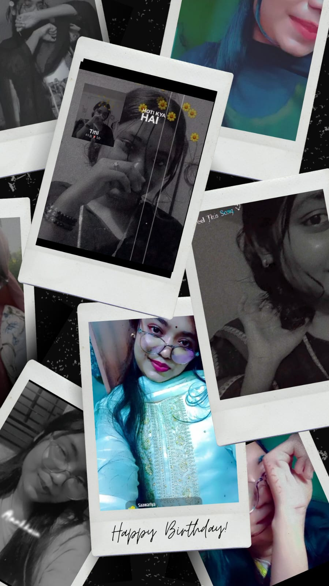 ~Nusrat Jahan Ripa
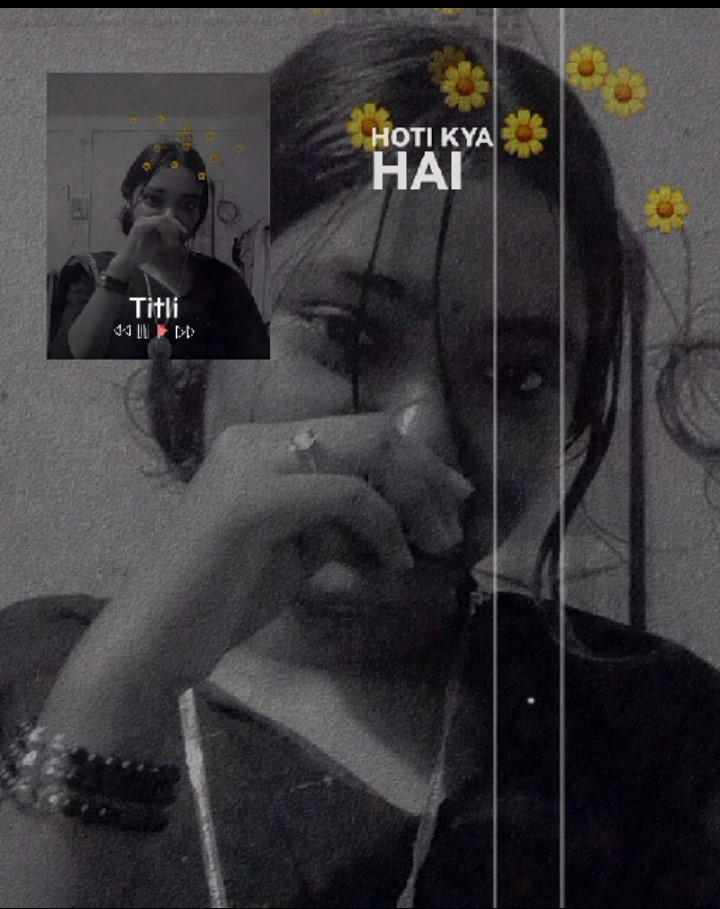
Happy Birthday
Many MAny Happy Returns Of the Day . May Allah Fullfill Your All wishes. May Allah grant you all the years of my life. I will keep you in my prayers, whether I am here or not. I want you to stay happy and smiling like this for the rest of your life. Please take care of yourself. You are someone very special to me
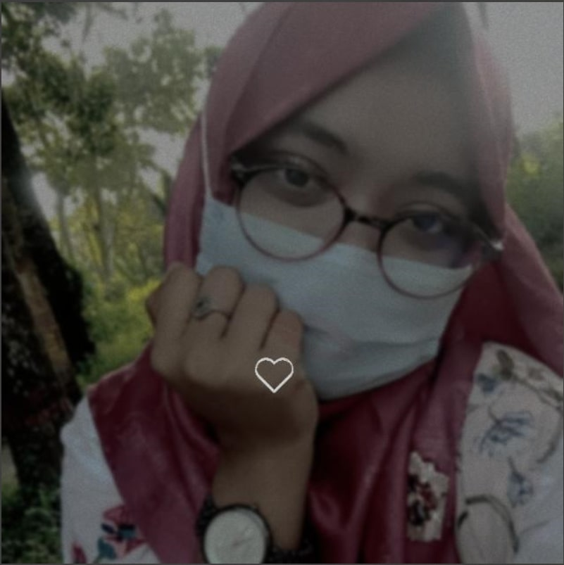
Your Eyes
Your Eyes
Your eyes have a peculiar sweetness, once I gaze into them, my heart never wants to look away.But unfortunately, I have to look away. Until today, I've never had the courage to look directly into your eyes. I don't know how true it is that I can read your eyes, but believe me, whenever I look into your eyes, I can tell whether you're angry, upset, or happy. Your eyes are so enchanting, and I regret that I can't see them forever
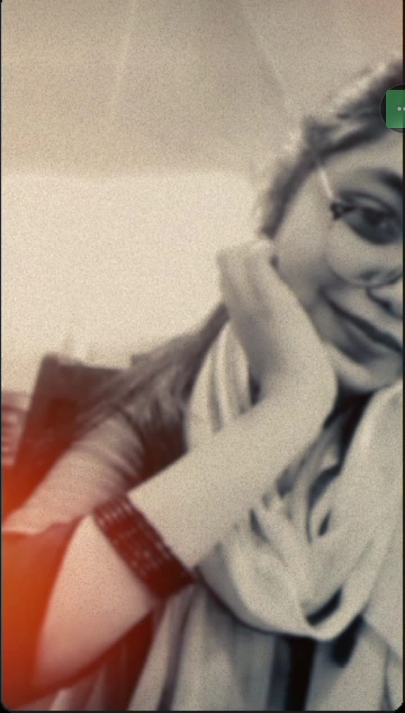
Your Smile
Your Smile
There's a magic in your smile that calms my heart in an instant.I haven't had the fortune to see your smile up close yet, but when I sense that you're happy, it's a feeling beyond words. I can't express how much peace it brings to my heart. Though I haven't had the chance to see it directly, I’ve witnessed your smile, and ever since, I’ve vowed that I would do anything—even give my life—for the smile on your face
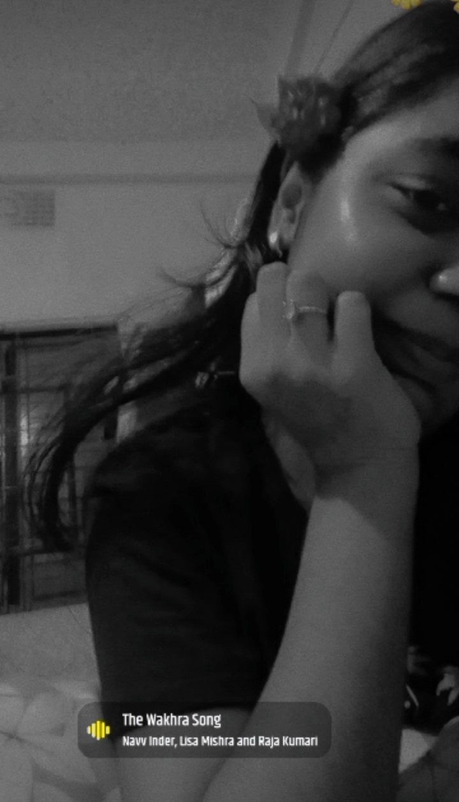
Your Character
Your Character
If I were to say which girl has the most beautiful character among all the girls I have seen, I would undoubtedly say your name. I've been watching you, secretly from the very beginning. You value others' feelings, and I've seen how you, despite your own struggles, always stay happy in front of others. A girl who values others' feelings more than her own is certainly not like every other girl. I see in you honesty, courage, self-respect, and the care you show for others. I can say with my eyes closed that finding a girl like you is only possible for someone truly fortunate.
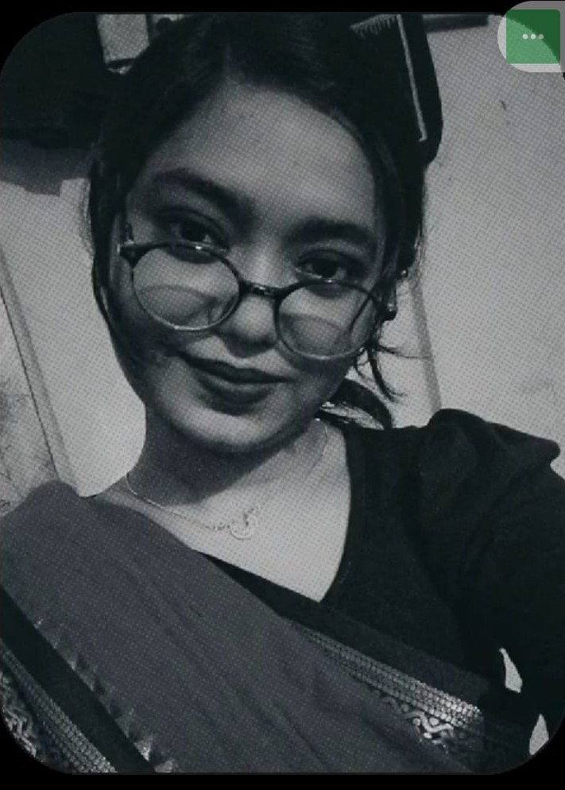
Saree On You
Saree On You
In a saree, you look like a completely different kind of beauty. I’ve rarely had the fortune to see you in a saree, but every time I have, I’ve fallen more in love with you. There’s something I’m realizing today—whoever said that a woman’s beauty truly shines in a saree, they must have been praising someone they loved. Of all the regrets I have in life, the biggest one is not having the chance to see you in a saree, up close.
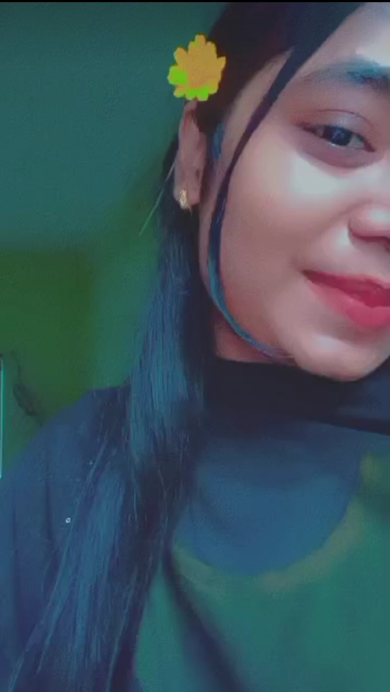
You Honesty
You Honesty
To me you are simple and honest person . I have seen so many girls in my whole life but if i have to choose the most honest persion it will be you . I can share my every feeling without any hesitation . you almost know everything about me. i feel safe sharing my emotion with you. Thank You For Coming In My ife. If You marry someone i will be the most jealous person .
Your Caring
Your Caring
The more I've come to know you, the more I'm amazed. I’ve seen that you respect the feelings of others, whether you like it or not. There's no need to go too far; let me just talk about myself—someone like me, a boy, who you have valued this much, is already a lot. I irritate you so much, I make you angry, but still, you forgive me every time. Until the end of my life, in my eyes, you will always be the best
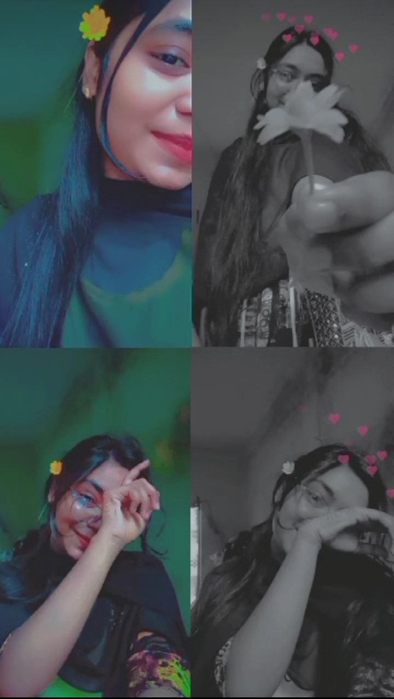
Your Charm
Your Charm
Your charm is not just external, but within you lies an extraordinary peace and beauty.The more I see you, the more I am amazed. Even in this age, there are people like you with such a good heart. I often observe your behavior, your beauty, your love and respect for others. If someone truly loves you, perhaps you would do everything possible for them. If you love someone, just thinking about what you would do for them makes me regret, I wish I could be that person
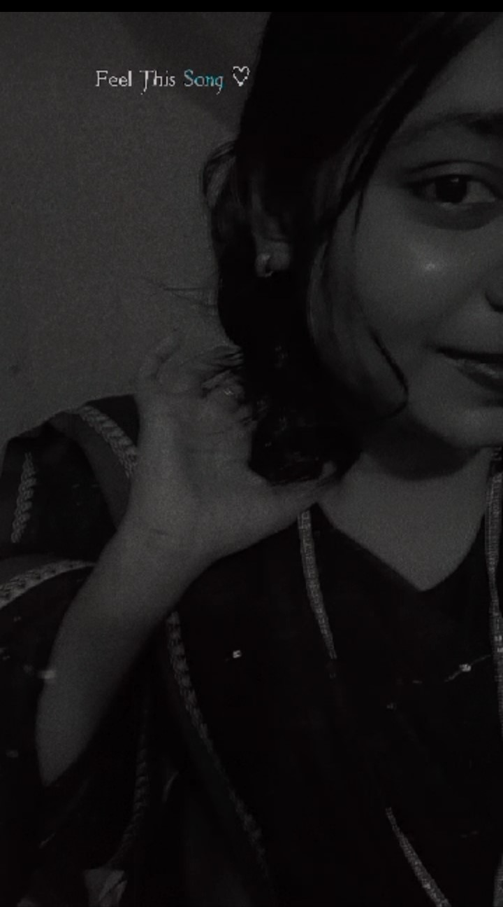
Your Happy face
Your Happy face
If you ask me when I am happiest, I would say it’s when I see your smiling face, when I hear your laughter. You know, the day you shared that story with tears in your eyes, it really hurt me. I can’t bear to see tears, sadness, or anything that makes you upset. If I had the chance, I would love you so much that words couldn’t explain it. I would give my all just to make sure no tear ever falls from your eyes.
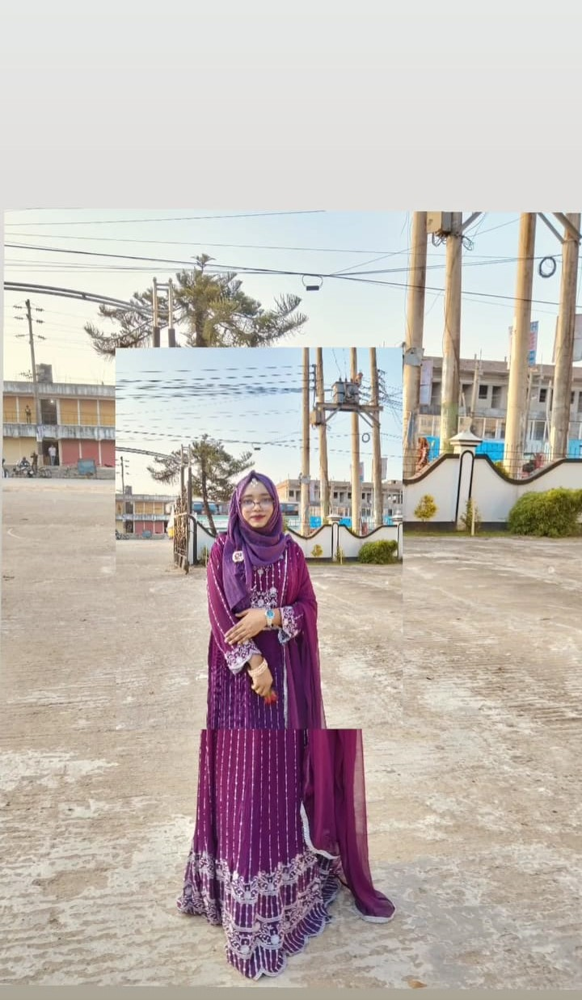
Your First Birthday In sylhet
Your First Birthday In sylhet
I still remember your first birthday. I didn’t know it was your birthday, but I would often go to your Facebook and look at your pictures. One day, I suddenly noticed that your birthday was on the 15th. You know me, I don't even know how I spend my money. So, I went to Zindabazar. I didn’t like any watch, but I ended up picking a simple one. I was thinking that I might get to see you, but you were wearing a mask. That day, I was thinking to myself, 'Next birthday, I’ll give you something better, InshaAllah
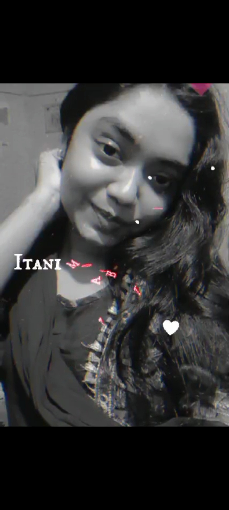
Your Second Birthday In sylhet
Your Second Birthday In sylhet
I planned to make this birthday special, spending a month searching for the perfect saree. I ended up ordering a few items, not realizing I could have gotten a better saree for the same price. When the parcel arrived, I didn’t open it right away, and the handwritten note I requested wasn’t included. Once again, things didn’t go as planned, but I promised myself that for the next birthday, I’ll do something even better, InshaAllah
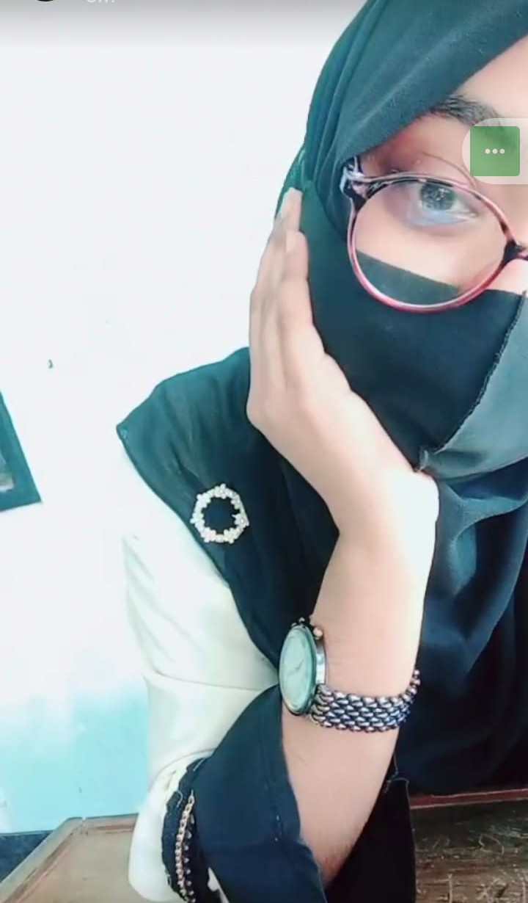
Your Third Birthday In sylhet
Your Third Birthday In sylhet
Once again, I wasn’t able to do what I had planned. My wish was that tonight at 12 o’clock, you would wear a dress I gave you, with flowers in your hair or on your wrist, and a birthday cake. But look at my luck, I lost track of time while trying to get the size right. However, yes, next time, I’ll do something even better than this, InshaAllah
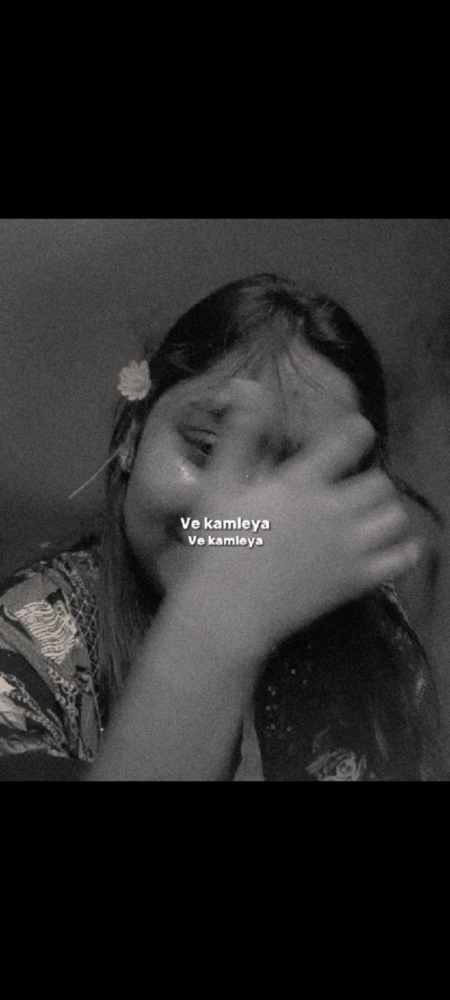
Thank You ~ Let me know How it was